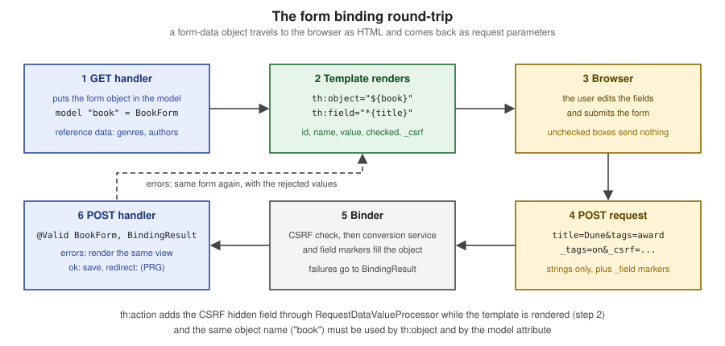

Forms & Data Binding
|
This content was generated with the assistance of AI and should be verified against the official documentation before being relied on in production. |
This page is written against Thymeleaf 3.1.5.RELEASE (2026-04-21), Spring Boot 4.1.1 (Spring Framework 7.0.9) and Java 21, checked on
2026-10-08. Every example was compiled and run on that stack in a scratch Bookshelf application (Maven wrapper, JDK 26 with --release 21,
the auto-configured SpringTemplateEngine, MockMvc and Spring Security’s test support), and the rendered output shown is the real output of
those runs. Form binding is a feature of the Spring integration (thymeleaf-spring6, the module also used with Spring Framework 7): the
Standard Dialect alone has th:object, but th:field, th:errors, the #fields and #ids helpers that talk to Spring’s binder, and the
RequestDataValueProcessor hook exist only with Spring MVC. The same attributes are available with Spring WebFlux (which has its own reactive RequestDataValueProcessor; the examples here run on MVC), while a standalone engine has no binder and so no th:field.
An HTML form is a list of strings travelling to the server, and a Java application wants a typed object. Spring MVC closes that gap with a
command object (also called form-backing bean): the controller puts it into the model, the template renders each of its properties as a
form control, and when the form is posted Spring’s data binder converts the strings back into a new instance of the same class. Thymeleaf’s
part is the first half: th:object selects the object and th:field writes the id, name, value and checked or selected state of
each control so that the names are exactly what the binder will read. Validation and the error messages that come back are the subject
of the next page of the section (Validation & Error Messages); this page builds the round trip itself. The running scenario is the
Bookshelf introduced on the Getting Started page.

The command object: th:object and th:action
Thymeleaf requires the command object to be declared on the <form> tag with th:object, and the form’s target to be written with
th:action:
<form action="#" th:action="@{/forms/books/save}" th:object="${book}" method="post">
...
</form>The Spring tutorial attaches three restrictions to th:object on a form tag:
-
the value must be a variable expression that names only a model attribute, without property navigation:
${book}is valid and${book.author}is not -
no other
th:objectmay appear inside the form, which is consistent with the fact that HTML forms cannot be nested -
the name must match the model attribute on the Spring side: by default the uncapitalised simple class name of the command object (a
BookFormis exposed asbookForm), or whatever name@ModelAttribute("book")orModel.addAttribute("book", ...)set
th:action is more than th:href for forms. It builds the URL with the same link-expression machinery as the
Link URLs page (context path, rewriting) and, as shown further down, it is the attribute that
asks Spring Security for the CSRF hidden field. The static action="#" is what a browser shows when the template is opened from disk, so the
file stays a natural template.
Form-data objects versus domain objects
The object behind th:object is bound from request parameters, so every property with a setter is a property an attacker can set by adding a
parameter. Binding a JPA entity directly (a Book with its id, version and any internal flag) invites that over-posting, and it also pushes
web concerns (a LocalDate formatted for an HTML date input, an Author chosen from a list) into the persistence model. The Bookshelf
therefore keeps two classes: the Book entity, and a BookForm that holds only what the page edits, with web-friendly types and the
formatting and validation annotations:
public class BookForm {
private Long id;
private Integer version;
@NotBlank private String title;
private String summary;
@Min(1) private Integer pages;
@DateTimeFormat(iso = DateTimeFormat.ISO.DATE) private LocalDate published;
private Genre genre;
private Format format;
private Author author;
private boolean featured;
private List<String> tags = new ArrayList<>();
// getters and setters
}The controller exposes the form object (and the reference data the controls need) to the template. Methods annotated with @ModelAttribute add
their return value to the model of every handler method in the controller:
@Controller
@RequestMapping("/forms/books")
public class BookFormController {
// constructor injecting BookRepository books and AuthorRepository authors
@ModelAttribute("genres")
Genre[] genres() { return Genre.values(); }
@ModelAttribute("formats")
Format[] formats() { return Format.values(); }
@ModelAttribute("authors")
List<Author> authors() { return authors.findAll(); }
@ModelAttribute("allTags")
List<String> allTags() { return List.of("classic", "award", "translated"); }
@GetMapping("/new")
public String create(Model model) {
model.addAttribute("book", new BookForm());
model.addAttribute("mode", EditMode.CREATE);
return "forms/book";
}
}The same mechanism, declared in a @ControllerAdvice class instead, exposes an attribute to every controller of the application (an application
version for the footer, a list of languages). The rest of the controller is built up in the sections below, and the whole flow is the
Post/Redirect/Get pattern: the POST handler either redisplays the form (errors) or saves and answers with redirect:, so that a reload of the
result page does not post again.
th:field on inputs, textareas and hidden fields
th:field is the attribute that does the work of binding a control to a property. It is the equivalent of the path attribute of Spring’s
<form:input> JSP tags (see Spring MVC with JSP), and it behaves differently on <input>, <select> and <textarea>, and by the type of the input. Its value must be a
selection expression (*{...}), evaluated on the form-backing bean rather than on the context variables, and unlike th:object it may
navigate properties.
<input type="hidden" th:field="*{id}">
<input type="hidden" th:field="*{version}">
<label for="title">Title</label>
<input type="text" th:field="*{title}">
<label for="pages">Pages</label>
<input type="number" min="1" th:field="*{pages}">
<label for="published">Published</label>
<input type="date" th:field="*{published}">
<label for="summary">Summary</label>
<textarea rows="3" th:field="*{summary}"></textarea>Source: Thymeleaf + Spring — Inputs
Rendering the edit page of an existing book (the same template, its form object loaded from the database) produces:
<input type="hidden" id="id" name="id" value="3">
<input type="hidden" id="version" name="version" value="0">
<label for="title">Title</label>
<input type="text" id="title" name="title" value="The Dispossessed">
<label for="pages">Pages</label>
<input type="number" min="1" id="pages" name="pages" value="387">
<label for="published">Published</label>
<input type="date" id="published" name="published" value="1974-05-01">
<label for="summary">Summary</label>
<textarea rows="3" id="summary" name="summary">An ambiguous utopia</textarea>Source: Thymeleaf + Spring — Inputs
What th:field does, as shown by that output:
-
it writes
idandnamefrom the property path (title, and for nested paths such asrows[0].namethe same string), so the posted parameter names always match what the binder reads -
it writes the
valuefrom the bean, and for a textarea it fills the element body; the value is always HTML-escaped, and unlike Spring’s JSP tags there is no switch to turn the escaping off -
it applies Spring’s registered conversion service even when the expression is not double-bracketed: the
LocalDateappeared as1974-05-01because of@DateTimeFormat(iso = DateTimeFormat.ISO.DATE), the format an HTML date input requires (see Conversion & Formatting) -
it understands the HTML5 input types (
number,date,email,colorand so on), so they are bound like any other text field, and any other attributes on the tag, such asminandrows, are left untouched -
after a failed bind it shows the value that was rejected instead of the bean’s value, so the user does not lose what they typed (the failed date
next summercame back verbatim in thevalueof the date input in the run)
Trimming and other binder settings
Trimming whitespace and turning empty strings into null is a binder concern, not a template one. An @InitBinder method on the controller
registers a StringTrimmerEditor:
@InitBinder
void trimStrings(WebDataBinder binder) {
binder.registerCustomEditor(String.class, new StringTrimmerEditor(true)); // " " becomes null
}Source: Spring Framework — @InitBinder
In the run, a title posted as + Invisible Cities + was saved as Invisible Cities, and an empty title was seen by @NotBlank as null and
rejected. @InitBinder is also where setAllowedFields / setDisallowedFields belong when a form object has to be bound from a class with
more setters than the page edits. A PropertyEditor registered there is per-controller and per-request; a Formatter or Converter registered
globally in the conversion service is the current, thread-safe way for types used all over the application (details on the Conversion &
Formatting page).
Labels, ids and #ids
A label must point at its control’s id, and th:field chooses that id itself. The rules found in the run are:
-
for a text input, textarea, select, hidden field and file input, the generated
idis the field name (title), so a plainfor="title"is correct -
for checkboxes and radio buttons the
idcarries a sequence suffix (featured1,tags1,tags2), because several controls share a name; the sequence comes from the#idsutility object, and the matching label has to ask it for the same value
#ids.seq('x') generates an id with the next sequence number for x, #ids.next('x') returns the id the next control will get (use it in a
label written before its control, as the Spring tutorial does for its single checkbox) and #ids.prev('x') returns the id of the control
just rendered (use it in a label written after it, as the examples below do).
<input type="checkbox" th:field="*{featured}">
<label th:for="${#ids.prev('featured')}">Featured on the home page</label>Two things do not work, and both were tried: th:for="*{title}" renders for="The Dispossessed" (a selection expression yields the value
of the property, not its id), and #ids.next('title') on a text input renders for="title1" while the control is id="title". Use the
#ids functions for checkboxes and radio buttons only. Associating every control with a label is also what makes a form usable with a
screen reader, as covered on Accessibility.
Checkboxes
A single boolean checkbox
A checkbox bound to a boolean property needs only th:field. Browsers send nothing for an unchecked checkbox, so Spring’s binder uses a
convention: for every control it can see, the template also writes a hidden field named _ plus the property name, and a request that carries
_featured but no featured is read as "present and unchecked". th:field writes that hidden marker for you:
<input type="checkbox" id="featured1" name="featured" value="true" checked="checked"><input type="hidden" name="_featured" value="on"/>
<label for="featured1">Featured on the home page</label>The prefix _ is WebDataBinder.DEFAULT_FIELD_MARKER_PREFIX and can be changed with setFieldMarkerPrefix. A test that posts only the markers
confirms that the binder turns them into the empty values:
@Test
void uncheckedBoxesAreSentAsMarkers() throws Exception {
Book b = saved();
mvc.perform(post("/forms/books/save").with(csrf())
.param("id", String.valueOf(b.getId())).param("version", String.valueOf(b.getVersion()))
.param("title", "The Dispossessed").param("_featured", "on").param("_tags", "on"))
.andExpect(status().is3xxRedirection());
Book reloaded = books.findById(b.getId()).orElseThrow();
assertThat(reloaded.isFeatured()).isFalse();
assertThat(reloaded.getTags()).isEmpty();
}Several checkboxes bound to a collection
When the property is a collection (a List<String> of tags here, but an array or a Set also works), every checkbox needs a th:value: it is
the value that is added to the collection when the box is checked, and it is how th:field decides which boxes to mark checked:
<fieldset>
<legend>Tags</legend>
<div th:each="tag : ${allTags}">
<input type="checkbox" th:field="*{tags}" th:value="${tag}">
<label th:for="${#ids.prev('tags')}" th:text="${tag}">tag</label>
</div>
</fieldset><div>
<input type="checkbox" value="classic" id="tags1" name="tags" checked="checked"><input type="hidden" name="_tags" value="on"/>
<label for="tags1">classic</label>
</div>
<div>
<input type="checkbox" value="award" id="tags2" name="tags" checked="checked"><input type="hidden" name="_tags" value="on"/>
<label for="tags2">award</label>
</div>
<div>
<input type="checkbox" value="translated" id="tags3" name="tags"><input type="hidden" name="_tags" value="on"/>
<label for="tags3">translated</label>
</div>The id suffix is the #ids sequence, and a marker is written after each box. Posting tags=classic&tags=translated&_tags=on binds a list
with those two values, which the creation test in the scratch application asserts.
Where the hidden marker goes
By default the marker is written after the checkbox, as above. Spring’s own tag library offers the opposite order, and Thymeleaf has a switch
for it: the Spring Boot property spring.thymeleaf.render-hidden-markers-before-checkboxes (default false) sets the
renderHiddenMarkersBeforeCheckboxes flag of the SpringTemplateEngine.
spring.thymeleaf.render-hidden-markers-before-checkboxes=true<input type="hidden" name="_featured" value="on"/><input type="checkbox" id="featured1" name="featured" value="true">
<label for="featured1">Featured on the home page</label>The order matters to client code that looks at nextElementSibling of the box, and to CSS or JavaScript that styles or wraps the pair; the
binder does not care. The property and the flag are described with the other spring.thymeleaf.* settings on
Spring Boot Auto-configuration & Properties.
Radio buttons
Radio buttons are written like multi-valued checkboxes, except that they are single-valued, so th:value supplies each option’s value and
th:field marks the one equal to the bound property. No hidden marker is written for a radio group:
<fieldset>
<legend>Genre</legend>
<div th:each="g : ${genres}">
<input type="radio" th:field="*{genre}" th:value="${g}">
<label th:for="${#ids.prev('genre')}" th:text="${g}">genre</label>
</div>
</fieldset><div>
<input type="radio" value="FICTION" id="genre1" name="genre" checked="checked">
<label for="genre1">FICTION</label>
</div>
<div>
<input type="radio" value="SCIENCE" id="genre2" name="genre">
<label for="genre2">SCIENCE</label>
</div>
<div>
<input type="radio" value="HISTORY" id="genre3" name="genre">
<label for="genre3">HISTORY</label>
</div>The property here is an enum, and the string FICTION is turned into Genre.FICTION by Spring’s StringToEnumConverterFactory; an unknown value
is a binding error (a typeMismatch code) and not an exception: posting genre=BOGUS in the run redisplayed the form with status 200. The labels shown to people usually come from the message bundle (a
#{...} lookup keyed by the enum name) rather than from th:text="${g}"; that keeps the submitted value stable while the displayed text is
translated.
Selects
Only the <select> carries th:field; the nested <option> tags carry th:value, which is what lets th:field decide which option gets
selected. Attribute precedence lets th:each sit on the <option> itself.
A select over an enum
<label for="format">Format</label>
<select th:field="*{format}">
<option value="">-- choose --</option>
<option th:each="f : ${formats}" th:value="${f}" th:text="${f}">format</option>
</select><label for="format">Format</label>
<select id="format" name="format">
<option value="">-- choose --</option>
<option value="PAPERBACK">PAPERBACK</option>
<option value="HARDCOVER" selected="selected">HARDCOVER</option>
<option value="EBOOK">EBOOK</option>
</select>The first <option value=""> is the "nothing chosen" entry: an empty string posted for an enum or a number is bound as null by the standard
conversion, which is what a form that allows no choice needs.
A select over entities
For a property whose type is an entity, the option value is the entity’s identifier, and a Converter turns the posted identifier back into
the entity before it reaches the form object. Registering the converter as a Spring bean is enough: Spring Boot adds every Converter bean to
the MVC conversion service (details on Conversion & Formatting).
@Component
public class AuthorConverter implements Converter<String, Author> {
private final AuthorRepository authors;
public AuthorConverter(AuthorRepository authors) { this.authors = authors; }
@Override
public Author convert(String id) {
return id.isBlank() ? null : authors.findById(Long.valueOf(id)).orElse(null);
}
}<label for="author">Author</label>
<select th:field="*{author}">
<option value="">-- choose --</option>
<option th:each="a : ${authors}" th:value="${a.id}" th:text="${a.name}">author</option>
</select><label for="author">Author</label>
<select id="author" name="author">
<option value="">-- choose --</option>
<option value="1" selected="selected">Ursula K. Le Guin</option>
<option value="2">Italo Calvino</option>
</select>In the run, the option of the stored author was marked selected with only this one-way converter registered, and the posted id 2 was
bound to the Italo Calvino author (the creation test asserts getAuthor().getName()). The converter does a database lookup per request, so
a request carrying an unknown id (author=999 in the run) leaves the property null and is accepted; validate that a required choice is
present, and use the posted value only as an identifier to look up.
Dynamic fields: indexed rows
A form that edits a list (the chapters of a book) binds each row to an element of a collection with an indexed property path,
rows[0].name. The template iterates the list and builds the index into the expression with preprocessing: the double underscore syntax
evaluates ${rowStat.index} before the selection expression is evaluated, so the final expression is the literal path rows[0].name.
<form action="#" th:action="@{/forms/outline}" th:object="${outline}" method="post">
<input type="text" th:field="*{title}">
<table>
<thead>
<tr>
<th>#</th><th>Chapter</th><th>Pages</th>
<th><button type="submit" name="addRow">Add row</button></th>
</tr>
</thead>
<tbody>
<tr th:each="row, rowStat : *{rows}">
<td th:text="${rowStat.count}">1</td>
<td><input type="text" th:field="*{rows[__${rowStat.index}__].name}"></td>
<td><input type="number" th:field="*{rows[__${rowStat.index}__].pages}"></td>
<td><button type="submit" name="removeRow" th:value="${rowStat.index}">Remove</button></td>
</tr>
</tbody>
</table>
<button type="submit">Save outline</button>
</form>Adding and removing rows needs no JavaScript: the two buttons submit the same form with an extra parameter, and the controller has one
mapping per parameter. Spring picks the mapping whose params condition matches, and the plain @PostMapping handles the real submit:
@Controller
@RequestMapping("/forms/outline")
public class OutlineController {
@GetMapping
public String show(Model model) {
OutlineForm form = new OutlineForm();
form.getRows().add(new ChapterRow());
model.addAttribute("outline", form);
return "forms/outline";
}
@PostMapping(params = "addRow")
public String addRow(@ModelAttribute("outline") OutlineForm form) {
form.getRows().add(new ChapterRow());
return "forms/outline";
}
@PostMapping(params = "removeRow")
public String removeRow(@ModelAttribute("outline") OutlineForm form, @RequestParam("removeRow") int index) {
if (index >= 0 && index < form.getRows().size()) {
form.getRows().remove(index);
}
return "forms/outline";
}
@PostMapping
public String save(@ModelAttribute("outline") OutlineForm form, Model model) {
model.addAttribute("total", form.getRows().stream()
.map(ChapterRow::getPages).filter(p -> p != null).mapToInt(Integer::intValue).sum());
return "forms/outline";
}
}Posting addRow with one filled row, as the test does, redisplays the form with a second, empty row. The output of that run:
<tr>
<td>1</td>
<td><input type="text" id="rows0.name" name="rows[0].name" value="Winds"></td>
<td><input type="number" id="rows0.pages" name="rows[0].pages" value="20"></td>
<td><button type="submit" name="removeRow" value="0">Remove</button></td>
</tr>
<tr>
<td>2</td>
<td><input type="text" id="rows1.name" name="rows[1].name" value=""></td>
<td><input type="number" id="rows1.pages" name="rows[1].pages" value=""></td>
<td><button type="submit" name="removeRow" value="1">Remove</button></td>
</tr>Two details of this design: a list property that is null is auto-grown by Spring’s binder when it sees rows[1].name (hence the
initialised ArrayList in the form object, and the safe bound check in removeRow), and indexes are positions, not identities, so removing
row 0 renumbers the later rows. Rows that are persisted entities should carry a hidden identifier field next to their other fields. A variant
that does not reload the page, returning one row as a fragment to a fetch call or an htmx request, is described on the
Fragment Rendering & AJAX page of this section.
Shared create and edit templates
Create and edit differ in the form object’s initial state and in a few labels, not in the controls. One template serves both; each handler
puts an EditMode enum in the model and the template reads it for the title and button:
@GetMapping("/{id}/edit")
public String edit(@PathVariable Long id, Model model) {
Book book = books.findById(id).orElseThrow(() -> new ResponseStatusException(HttpStatus.NOT_FOUND));
model.addAttribute("book", toForm(book));
model.addAttribute("mode", EditMode.EDIT);
return "forms/book";
}
@PostMapping("/save")
public String save(@Valid @ModelAttribute("book") BookForm form, BindingResult result, Model model) {
if (result.hasErrors()) {
model.addAttribute("mode", form.getId() == null ? EditMode.CREATE : EditMode.EDIT);
return "forms/book"; // same URL, same model: the user's input is still there
}
Book saved = books.save(toEntity(form)); // a stale version throws ObjectOptimisticLockingFailureException
return "redirect:/forms/books/" + saved.getId() + "/edit"; // Post/Redirect/Get
}<h1 th:text="${mode.name() == 'CREATE'} ? 'New book' : |Edit book ${book.title}|">Book</h1>
...
<button type="submit" th:text="${mode.name() == 'CREATE'} ? 'Create' : 'Save'">Save</button>The single POST /save handler distinguishes the two modes by the hidden id field that the template always renders (empty on create,
filled on edit). The redirect uses the identifier of the saved entity only, never text from the request. Two more rules keep this safe: a
state-changing form is always a POST (the template’s method="post"), and the handler never builds the view name from request input (the
two view names are literals). The error branch is the "bad input" path of the round trip in the figure: the form is rendered again from the
very same object, so that every control shows what the user submitted. The model attribute mode is re-added because the failed POST
creates a new model.
Optimistic locking with a hidden version field
Two users who open the same book and save one after the other would silently overwrite each other’s changes. JPA’s optimistic locking
detects it: an @Version property on the entity is compared at flush time, and a stale value is an error. For that to work across requests
the version has to travel with the form, so the template writes it into a hidden field (see the first two lines of the input example) and the
form object carries it back. The POST handler builds a detached entity from the form (id and version included) and save merges it, which is
when the stale version is detected:
@Entity
public class Book {
@Id @GeneratedValue private Long id;
@Version private Integer version;
// other properties, getters and setters
}The failure is ObjectOptimisticLockingFailureException, which an advice turns into an HTTP 409 with a template that tells the user to reload:
@ControllerAdvice
public class FormsAdvice {
@ExceptionHandler(ObjectOptimisticLockingFailureException.class)
@ResponseStatus(HttpStatus.CONFLICT)
public String conflict() { return "forms/conflict"; }
}The test submits the same version twice; the first save wins and bumps the version to 1, the second carries a stale 0:
@Test
void secondStaleSubmissionIsAConflict() throws Exception {
Book b = saved();
var first = post("/forms/books/save").with(csrf())
.param("id", String.valueOf(b.getId())).param("version", "0").param("title", "First edit");
var second = post("/forms/books/save").with(csrf())
.param("id", String.valueOf(b.getId())).param("version", "0").param("title", "Second edit");
mvc.perform(first).andExpect(status().is3xxRedirection());
MvcResult r = mvc.perform(second).andExpect(status().isConflict()).andReturn();
assertThat(books.findById(b.getId()).orElseThrow().getTitle()).isEqualTo("First edit");
}<!DOCTYPE html>
<html>
<head><meta charset="UTF-8"><title>Conflict</title></head>
<body><h1>Somebody else changed this book</h1><p>Reload the page and apply your change again.</p></body>
</html>A version that is missing from the request is a different case, and the run shows it is not silently accepted: posting an existing id
without version fails with DataIntegrityViolationException: Detached entity with generated id '2' has an uninitialized version value 'null' for entity com.example.bookshelf.forms.Book.version
(a 500 for the user). The hidden field is therefore part of the form’s contract, and the controller should reject a request that lacks it.
The generic error pages (404, 5xx) and the conflict page belong to the Error Handling & Flash Messages page.
File upload with MultipartFile
A file input needs a multipart form: enctype="multipart/form-data" on the form and a MultipartFile property on the form object. Spring’s
binder binds the uploaded part to it like any other property:
<form action="#" th:action="@{/forms/covers}" th:object="${cover}" method="post" enctype="multipart/form-data">
<input type="text" th:field="*{caption}">
<input type="file" accept="image/png" th:field="*{file}">
<button type="submit">Upload</button>
</form>Source: Thymeleaf + Spring — Inputs
<form action="/forms/covers" method="post" enctype="multipart/form-data"><input type="hidden" name="_csrf" value="..."/>
<input type="text" id="caption" name="caption" value="">
<input type="file" accept="image/png" id="file" name="file">
<button type="submit">Upload</button>
</form>Source: Thymeleaf + Spring — Inputs
A file input has no value to render (browsers forbid it), so th:field writes only id and name. The form object and the controller:
public class CoverForm {
private String caption;
private MultipartFile file;
// getters and setters
}
@Controller
@RequestMapping("/forms/covers")
public class CoverController {
private static final byte[] PNG = {(byte) 0x89, 'P', 'N', 'G', 0x0D, 0x0A, 0x1A, 0x0A};
private static final long MAX_BYTES = 1_000_000;
private final Path directory;
public CoverController() throws IOException {
this.directory = Files.createTempDirectory("covers"); // placeholder storage for the example
}
@PostMapping
public String upload(@ModelAttribute("cover") CoverForm form, Model model, RedirectAttributes redirect) throws IOException {
MultipartFile file = form.getFile();
if (file == null || file.isEmpty()) {
model.addAttribute("problem", "Choose a file");
return "forms/cover";
}
// The content type and the file name come from the client: check size and signature ourselves
byte[] bytes = file.getBytes();
if (bytes.length > MAX_BYTES || bytes.length < PNG.length
|| !Arrays.equals(Arrays.copyOf(bytes, PNG.length), PNG)) {
model.addAttribute("problem", "Only PNG files up to 1 MB are accepted");
return "forms/cover";
}
Path target = directory.resolve(UUID.randomUUID() + ".png"); // never the client's file name
Files.write(target, bytes);
redirect.addFlashAttribute("stored", bytes.length + " bytes");
return "redirect:/forms/covers";
}
}The test uploads a PNG whose client-side name tries to escape the directory (../../etc/cover.png), which is never used, and a text file that
is rejected because its first bytes are not the PNG signature:
@Test
void coverUpload() throws Exception {
byte[] png = {(byte) 0x89, 'P', 'N', 'G', 0x0D, 0x0A, 0x1A, 0x0A, 0, 0, 0, 0};
mvc.perform(multipart("/forms/covers").file(new MockMultipartFile("file", "../../etc/cover.png", "image/png", png))
.param("caption", "Front").with(csrf()))
.andExpect(status().is3xxRedirection()).andExpect(flash().attribute("stored", "12 bytes"));
String html = mvc.perform(multipart("/forms/covers")
.file(new MockMultipartFile("file", "x.png", "image/png", "not a png at all".getBytes())).with(csrf()))
.andExpect(status().isOk()).andReturn().getResponse().getContentAsString();
assertThat(html).contains("Only PNG files up to 1 MB are accepted");
}The servlet container enforces the size limits, through Spring Boot’s spring.servlet.multipart.* properties (these exist in the Boot 4.1
configuration metadata, with the defaults of 1MB for a file and 10MB for a request):
spring.servlet.multipart.max-file-size=1MB
spring.servlet.multipart.max-request-size=2MBA request over a limit fails with MaxUploadSizeExceededException before the controller runs, so handle it in an @ControllerAdvice if the
user is to see a message. MockMvc does not apply the container’s limits (it builds the parts itself), which is why the example also checks
MAX_BYTES in code; test the properties against a real server. Never trust the client for anything else about the file: the content type
header and the file name are chosen by the sender, the original name must not become a path, and a signature check is the minimum before an
upload is stored or served (a full image-processing and storage design is on the Media Optimization page of the Backend section).
The automatic CSRF field and RequestDataValueProcessor
With Spring Security on the classpath, every state-changing request must carry the CSRF token. In the forms above no template writes the
token: th:action does it, through Spring’s RequestDataValueProcessor interface. Thymeleaf calls the bean named
requestDataValueProcessor at these points:
| Attribute | Method called |
|---|---|
|
|
|
|
|
|
|
|
Spring Security registers its implementation, CsrfRequestDataValueProcessor, under that bean name when the web security configuration is
enabled, and its getExtraHiddenFields returns the _csrf field. That is the field that appeared right after the <form> tag in every output above:
<form action="/forms/books/save" method="post"><input type="hidden" name="_csrf" value="..."/>The next test page has three forms, and shows what depends on th:action: only the second one, a POST whose action is a th:action, gets a token.
A form with a plain action attribute does not, and neither does a GET form (Spring Security’s processor adds the token only for methods
that change state).
<form action="/forms/books/save" method="post"><input type="text" name="title"></form>
<form th:action="@{/forms/books/save}" method="post"><input type="text" name="title"></form>
<form th:action="@{/forms/books/save}" method="get"><input type="text" name="q"></form><form action="/forms/books/save" method="post"><input type="text" name="title"></form>
<form action="/forms/books/save" method="post"><input type="hidden" name="_csrf" value="..."/><input type="text" name="title"></form>
<form action="/forms/books/save" method="get"><input type="text" name="q"></form>Posting without the token is rejected by the Spring Security filter chain before any controller runs:
@Test
void postWithoutCsrfTokenIsRejected() throws Exception {
mvc.perform(post("/forms/books/save").param("title", "x")).andExpect(status().isForbidden());
}Keep CSRF protection on for browser forms. For the form that is not rendered by Thymeleaf (an htmx request, a fetch call) the token has to
be sent in a header or a parameter by the client, and for non-browser clients the usual advice is a different security chain; the
Spring Security integration page of this section covers that. Very few applications implement RequestDataValueProcessor themselves; the
other legitimate use is rewriting URLs and form values (adding a signature, for instance) in one place.
Testing the forms
Every example on this page has a MockMvc test in the scratch application. The class setup is the part worth copying: a full application
context, a mock user and the csrf() post-processor of Spring Security’s test support (the Spring Boot 4 package for the annotation is
org.springframework.boot.webmvc.test.autoconfigure).
@SpringBootTest
@AutoConfigureMockMvc
@WithMockUser
class FormsTest {
@Autowired MockMvc mvc;
@Autowired BookRepository books;
@Autowired AuthorRepository authors;
@Test
void newFormRenders() throws Exception {
MvcResult r = mvc.perform(get("/forms/books/new")).andExpect(status().isOk()).andReturn();
String html = r.getResponse().getContentAsString();
assertThat(html).contains("name=\"_csrf\"").contains("id=\"title\"").contains("name=\"_featured\"");
}
}The whole scratch suite (thirteen form tests, including one that sets spring.thymeleaf.render-hidden-markers-before-checkboxes=true, plus the
context-load test) passed with ./mvnw test.
Pitfalls
| Mistake | What happens | Do this |
|---|---|---|
|
|
Add the form object in the GET handler, and use the same name in |
Rendering the form again after a failed POST without the reference data |
The selects and radio groups come back empty |
Put the lists in |
Binding a JPA entity directly |
Any request parameter can set any property with a setter (over-posting), and web formats leak into the entity |
A separate form-data object, or |
|
Renders the value of the property as the |
Plain |
|
|
The |
A multi-valued checkbox without |
Every box is submitted as |
|
A plain |
No |
|
Leaving out the hidden |
|
Always |
|
The browser sends only the file name as text, the |
|
Using the uploaded file’s original name as a path |
Path traversal and overwriting of existing files |
Generate the name (a |
|
|
Check |
|
Rejected: only a model attribute name is allowed on a form tag |
Bind the nested object with |
Version notes
-
The
th:object,th:field,#ids,#fieldsandRequestDataValueProcessorintegration are the same attributes as in Thymeleaf 3.0; the only change is the base package,jakarta.servletsince Spring Framework 6 / Thymeleaf 3.1 withthymeleaf-spring6. -
spring.thymeleaf.render-hidden-markers-before-checkboxesis a property of the Boot integration; as of Spring Boot 4.x the auto-configuration lives in thespring-boot-thymeleafmodule (see the Spring Boot Auto-configuration & Properties page). -
The Spring tutorial’s example
th:objectforms and#idsexamples are valid, but its sample application predates Spring Boot; take the dependency coordinates and configuration from this section instead. -
The consulted edition of Taming Thymeleaf (Wim Deblauwe, PDF v1.1.1, 2021) builds the same form flow (enum radios,
@DateTimeFormat, shared create and edit template, optimistic locking with a hidden version,StringTrimmerEditor, file upload); its Boot 2 era package names (javax.*) and some of its security configuration are outdated, but the Thymeleaf attributes are not.